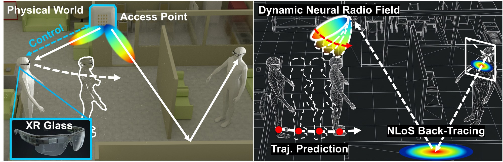

Predictive mmWave XR Network Optimization from Dynamic Neural Radio Fields
University of Georgia

Walk an XR headset through a room we measured at 28 GHz, add people who block the signal, and get what the headset would see: its camera view, the spatial spectrum and the power of every receive beam.
Put headsets and people into a room we measured at 28 GHz, and get data in the same shape as our beam scans.
The camera view, the 28 GHz spatial spectrum and the power of all 55 receive beams, from anywhere in the room.
Replay the walk we took while measuring the room, or five recorded XR activities: walking, gaming, interacting, navigating.
Animated people walk planned routes around the furniture, or go where you send them, and shadow the signal.
Each headset sees the others: who is in view, where, and how much of them is visible.
Drive every headset and person from Python, step by step, and react to what they measured.
Beam scans, spectra, camera images, arrival directions, line of sight and the base-station beam, plus a video of the run.
Each clip is generated, not filmed: floor map · what the headset sees · the 28 GHz spectrum it receives. Brighter means stronger.
Linux with an NVIDIA GPU. Every run also writes a short page with its video and how to load the data.
pip install torch==2.4.1 --index-url https://download.pytorch.org/whl/cu124 pip install gsplat==1.5.3 --extra-index-url https://docs.gsplat.studio/whl/pt24cu124 git clone https://github.com/Pervasive-Intelligence-Lab/radiosight.git && cd radiosight && pip install -e . radiosight-sim download all --dest twins radiosight-sim run scenarios/nlos_tx1_recorded_walk_pedestrian.yaml --out runs/demo
Lihao Zhang, Paul Kudyba, Zhenlin An, and Haijian Sun. ACM MobiCom 2026, Austin, TX, USA.
@inproceedings{zhang2026radiosight,
title = {RadioSight: Predictive mmWave XR Network Optimization from Dynamic Neural Radio Fields},
author = {Zhang, Lihao and Kudyba, Paul and An, Zhenlin and Sun, Haijian},
booktitle = {Proceedings of the 32nd Annual International Conference on Mobile Computing and Networking (MobiCom '26)},
year = {2026},
address = {Austin, TX, USA},
publisher = {ACM},
doi = {10.1145/3795866.3844465}
}